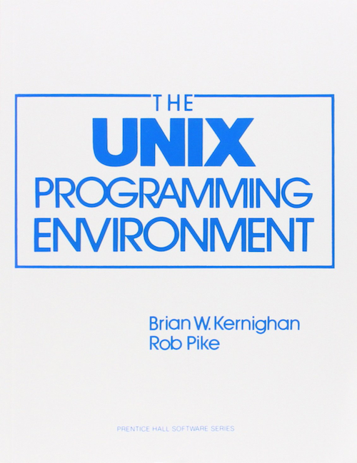
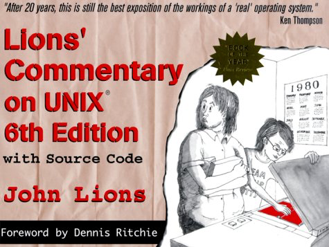
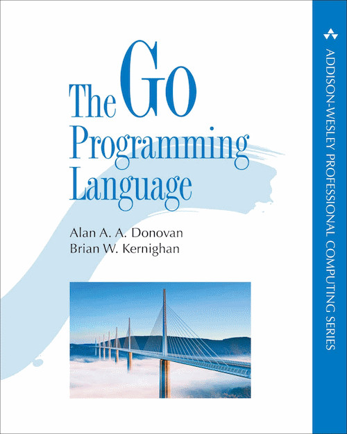
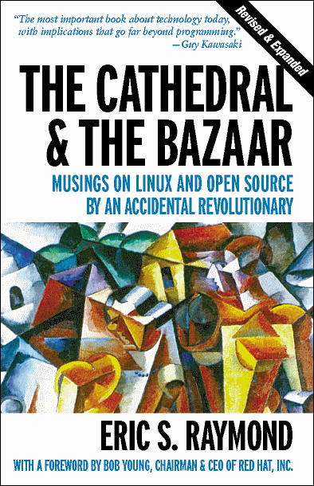
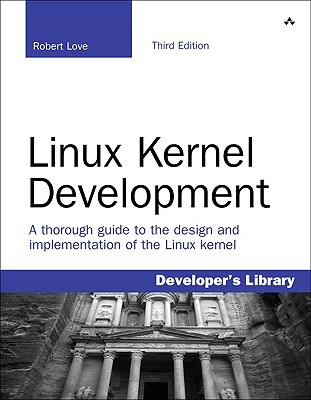
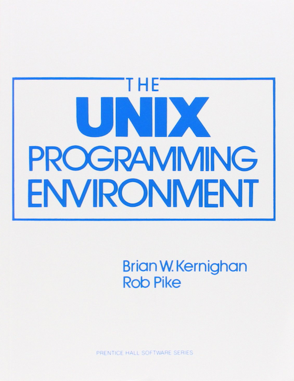
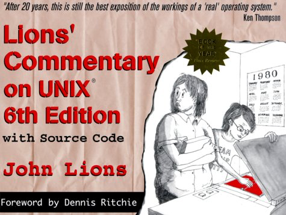
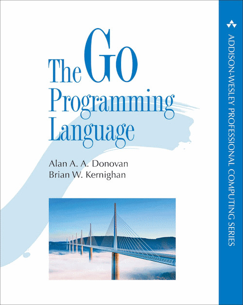
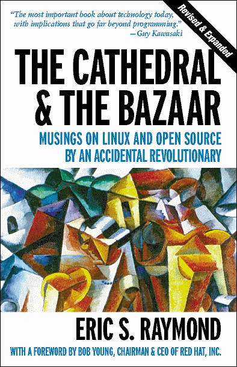
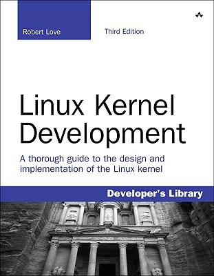
my name is hamid ghader. i'm a software engineer based in london. i enjoy coding in golang and reading c & unix/linux stuff. my favourite tech books include:
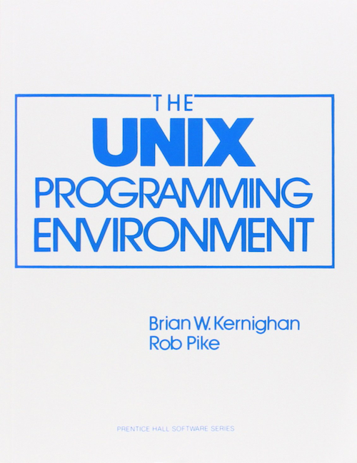
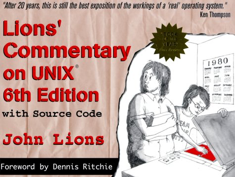
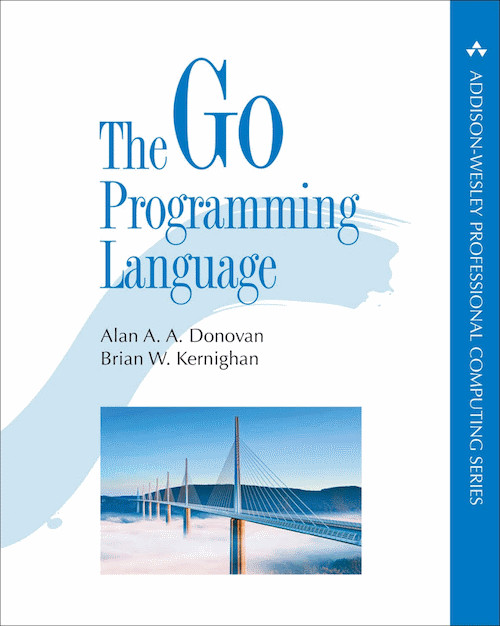
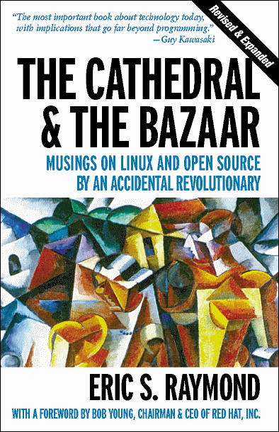
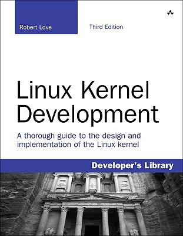
and this is my favourite talk on ted, i've probably watched it over 20 times and still watchin' it whenever i need some motivation.
i love 3d computer aided design too, although i haven't done anything for ages now. i know autocad very well and that's my primary expertise in 3d design. i have some experience in 3ds max too. i would be an industrial designer if i wasn't a software engineer.
i mostly listen to 70's & 80's rock music.